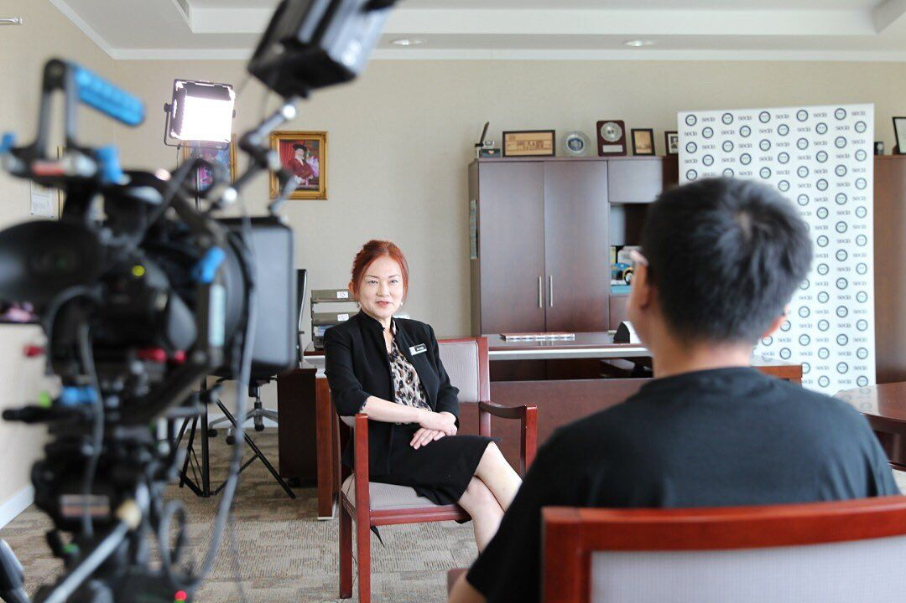
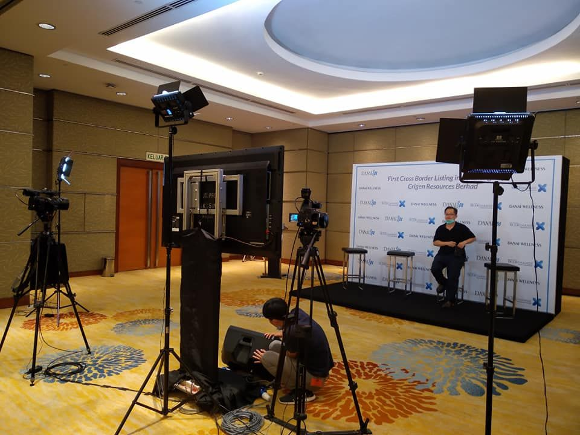
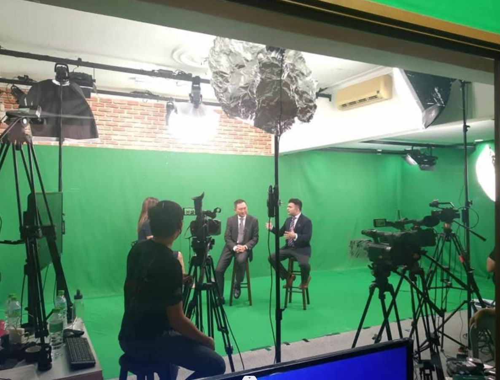
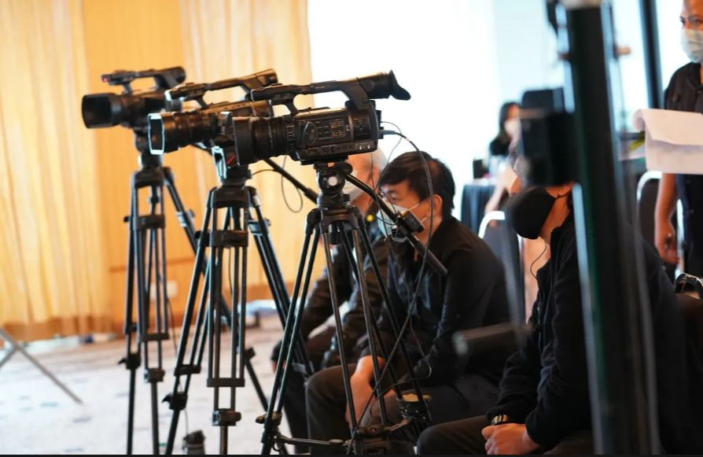

Perkhidmatan Videografi di Malaysia
May Vision Multimedia Studio ialah rumah produksi video di Kuala Lumpur yang menyediakan perkhidmatan videografi profesional di seluruh Malaysia. Daripada rakaman satu kamera hingga produksi berbilang kamera, pasukan kami mengendalikan semuanya sendiri — perancangan, penggambaran, penyuntingan dan penghantaran.
Apa yang merangkumi perkhidmatan videografi kami
- Video korporat, video produk dan video promosi
- Videografi acara — makan malam tahunan, pelancaran produk, persidangan, forum, seminar, aktiviti pembinaan pasukan, pameran, jelajah (roadshow) dan konsert
- Produksi televisyen, produksi podcast, dokumentari dan kandungan TV
- Siaran langsung (livefeed) & penstriman langsung, daripada satu kamera (SCP) hingga berbilang kamera (MCP)
- Penukaran pita VHS ke digital dan penduaan DVD/CD
Dari idea hingga video siap
Setiap projek melalui tiga peringkat: pra-produksi (pembangunan idea, perancangan produksi, penulisan skrip, rakaman suara latar), produksi (penggambaran, pengarahan, peralatan kamera, pencahayaan dan bunyi, pengurusan produksi) dan pasca-produksi (penyuntingan video dan grafik gerak).
Portfolio videografi
Lihat hasil kerja kami dalam produksi video korporat, video acara dan program televisyen (dalam bahasa Inggeris).
Siapa yang kami layan
Kami bekerjasama dengan syarikat korporat, syarikat PKS, agensi acara, persatuan dan organisasi. Sama ada anda perlukan satu video atau satu siri video, kami membantu anda daripada pembangunan idea dan pra-produksi sehingga penghantaran akhir.
Maklumat asas yang kami perlukan daripada anda
- Produksi video / foto acara: tarikh, masa, lokasi dan bilangan sudut kamera (jurukamera)
- Produksi video korporat: maklumat syarikat / produk, lokasi penggambaran dan tarikh akhir penghantaran
- Objektif dan tujuan video, serta di mana video akan ditayangkan atau digunakan
- Video rujukan yang anda mahu kami jadikan panduan (jika ada)
Hantarkan maklumat ini kepada kami dan kami akan berikan anggaran kos bersama cadangan ringkas atau proposal.




Contoh videografi


Soalan Lazim
Di mana anda menyediakan perkhidmatan videografi?
Kami berpusat di Kuala Lumpur dan menyediakan perkhidmatan videografi ke seluruh Malaysia, termasuk Selangor, Pulau Pinang, Johor Bahru (Johor), Ipoh (Perak), Kuantan (Pahang), Sabah (Kota Kinabalu) dan Sarawak (Kuching). Kami juga menyokong projek acara maya untuk pelanggan luar negara.
Adakah anda mengendalikan penyuntingan dan pasca-produksi?
Ya. Kami menyediakan penyuntingan video dan grafik gerak, supaya anda menerima video yang siap sepenuhnya.
Boleh anda merakam dengan lebih daripada satu kamera?
Boleh. Kami menghasilkan produksi daripada satu kamera hingga berbilang kamera, termasuk siaran langsung berbilang kamera yang diunjurkan ke skrin LED dewan acara.
Dapatkan sebut harga untuk projek anda
Hubungi 010-989 5913 atau hantarkan keperluan anda kepada kami.
Hubungi Kami